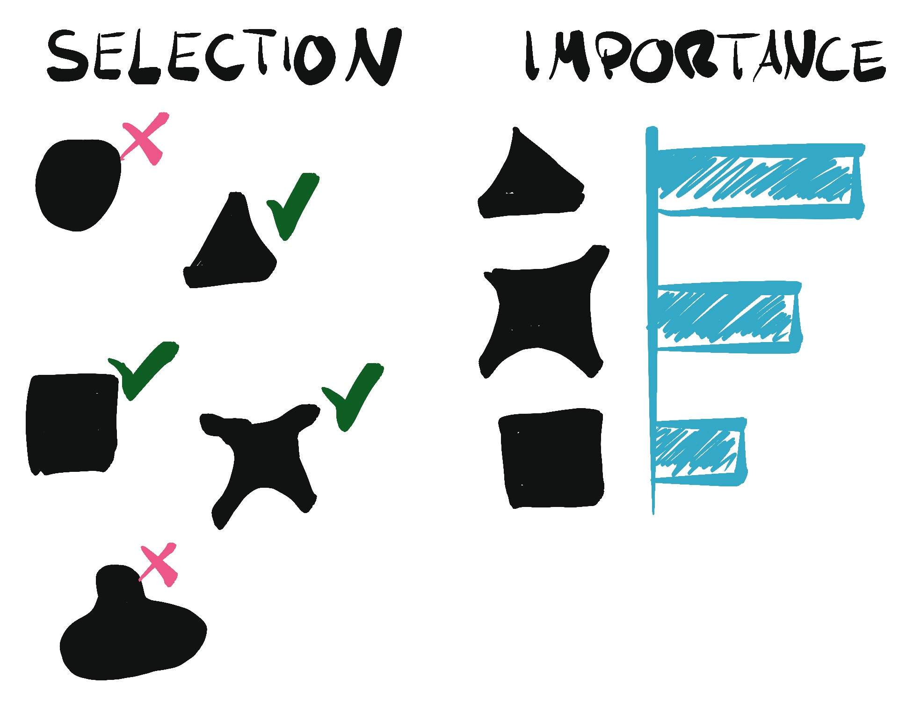

1. Introduction
In Part 1 , a simple model was built using single binary split called OneR Classifier.
In Part 2 , sklearn DecisionTreeClassifier framework was used and by setting a sample limit per node, loss was reduced.
In Part 3 , we used the concept of bagging by averaging predictions from many big trees to create a random forest.
Today, we’ll create a Feature Importance Plot very easily and quickly.
In the next post I’ll go into:
Gradient Boosting (sum of trees ) Decision Tree or Machines (GBMs)
2. Training and Validation Sets
from fastai.imports import * import torch, numpy as np, pandas as pdimport kaggle, zipfilefrom pathlib import Path= Path("titanic" )if not path.exists():print (f" { path} folder doesn't exist, downloading..." )str (path))f" { path} .zip" ).extractall(path)else :print (f" { path} exists!" )! ls {path}def proc_data_1(df):= df.mode().iloc[0 ]'Fare' ] = df.Fare.fillna(0 )= True )'LogFare' ] = np.log1p(df['Fare' ])'Embarked' ] = pd.Categorical(df.Embarked)'Sex' ] = pd.Categorical(df.Sex)def convert_cats_to_codes_2(trn_df, val_df, cat_list):= trn_df[cat_list].apply (lambda dfcol: dfcol.cat.codes) # replace with 1 and 0s = val_df[cat_list].apply (lambda dfcol: dfcol.cat.codes)return trn_df, val_dffrom numpy import randomfrom sklearn.model_selection import train_test_split42 )# 0 get raw data = pd.read_csv(path/ 'train.csv' )= pd.read_csv(path/ 'test.csv' )# 1. clean data ([replace nas with mode], [logfare], [sex/embarked to cat]) # 2. split training data: training and validation set = train_test_split(df, test_size= 0.25 )# 3. convert cats to codes = ["Sex" ,"Embarked" ]= convert_cats_to_codes_2(trn_df, val_df, cat_list)# 4. get idep and deps = "Survived" = ['Age' , 'SibSp' , 'Parch' , 'LogFare' ,"Pclass" ]def get_trn_and_val_idep_dep(df):= df[ cat_list + cont_list ].copy()= df[dep_col]return idep, dep= get_trn_and_val_idep_dep(trn_df)= get_trn_and_val_idep_dep(val_df)
titanic exists!
gender_submission.csv test.csv train.csv
3. Build Decision Tree Classifier
from sklearn.tree import DecisionTreeClassifier= DecisionTreeClassifier(min_samples_leaf= 50 )
4. Fit Decision Tree to our Training Data
DecisionTreeClassifier(min_samples_leaf=50) In a Jupyter environment, please rerun this cell to show the HTML representation or trust the notebook.
5. Create Feature Importance Plot
dict (cols= trn_idep.columns, imp= dtc_min50.feature_importances_)).plot('cols' , 'imp' , 'barh' )
6. Completed
As expected, Sex and Pclass are the most important features to survivability on the Titanic.